把散落的绿色软件与开发项目，装进一个快捷键秒开的便携盒
OneApp 是专为桌面重度用户与开发者打造的免安装软件管家：拖入 .exe、文件夹或 .zip/.7z 自动入库，按 Alt + Space 敲拼音首字母秒开，还能一键构建并追踪 Electron / Node / Python / Go 项目日志。
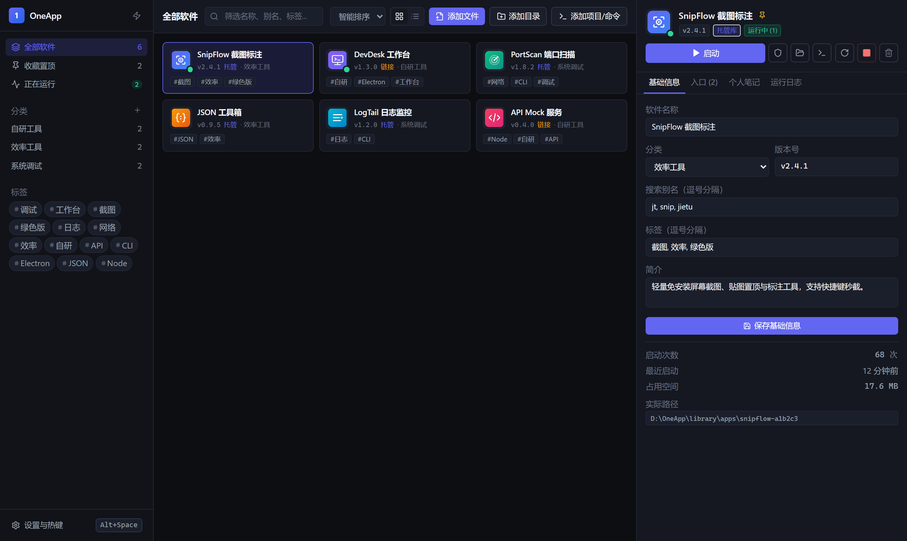
1. 为什么需要 OneApp？
📦 告别绿色软件满盘乱飞
把桌面、下载目录里零散的 .exe、绿色整包和 .zip/.7z 压缩包直接拖进 OneApp，自动解压、自动剥离多余套壳目录、自动识别主程序与图标。
⚡ 按一下 Alt+Space 拼音秒开
记不住英文名？直接敲中文全拼（jietu）或拼音首字母（jt）就能命中工具；还能用 #标签、@分类、:running 精确过滤。
🧑💻 开发中的项目也能免打包直启
自动识别 Electron / Node 项目并生成多入口；支持“产物缺失时自动构建”与隐藏黑窗实时捕获 stdout/stderr 日志。
🧳 整个文件夹拷走就能换电脑
所有数据存在同目录 data/，托管软件使用相对路径存在 library/。整包拷贝进 U 盘或同步盘，换任何盘符打开零损坏。
2. 3 步快速上手（小白零门槛）
1 双击打开 OneApp
运行 OneApp.exe，程序会自动在同目录生成 data/、library/ 以及「自研工具」「效率工具」「系统调试」3 个默认分类。关闭主窗口默认最小化到右下角系统托盘。
2 拖入软件或压缩包
把任意 .exe、绿色文件夹、.zip/.7z、.bat/.ps1、.lnk 或源码目录拖进窗口松手，或点击右上角 添加文件 / 添加目录。
3 随时随地一键启动
在主窗口双击卡片启动；或在任何界面按 Alt+Space 搜着开；也可以左键单击托盘图标，在浮窗里点着开。
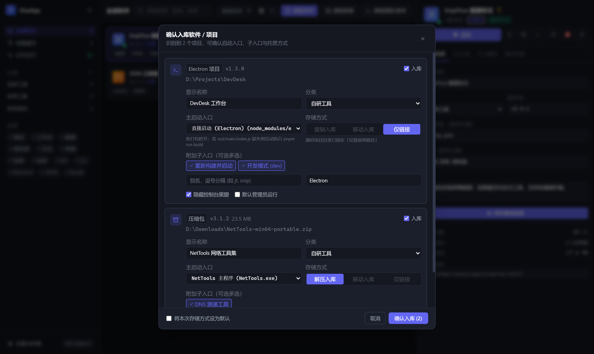
- 复制入托管库 / 解压入库（默认推荐）：把软件复制（或将压缩包解压）到
OneApp/library/apps/内，原文件保留不动，最安全。 - 移动入托管库：直接把原文件夹搬进
library/apps/并清理桌面/下载目录的散落文件，省空间不重复。 - 仅链接原路径：文件留在原处不动，OneApp 只记录路径——适合还在不断改代码的源码项目或体积很大的软件。
3. 详细功能使用手册
3.1 管理主窗口：收纳、整理与一键启动
主窗口采用三栏式布局，兼顾整理分类与高频启动：
- 左侧导航栏：包含智能视图（全部软件、收藏置顶、正在运行实时绿标计数）、自定义分类（点
+新建、悬停可删除）、标签过滤云，以及左下角的设置与热键入口（热键冲突时会在此提示）。 - 中间工作区：支持关键词实时筛选、4 种排序（
智能排序/名称排序/启动次数/最近添加）、卡片网格 / 高密度列表一键切换，全工作区支持系统文件拖放。 - 快捷操作：鼠标双击卡片直接启动，或点击卡片右上角蓝色播放图标直接启动；单击选中则在右侧抽屉查看详细配置。
3.2 极速启动条（Alt + Space）：敲拼音 1 秒找到并启动
无论你正在干什么，按下全局热键 Alt + Space 就能在屏幕正中间呼出极速启动条。即使不打字，也会自动把收藏置顶、正在运行、最近使用的软件排在最前面。
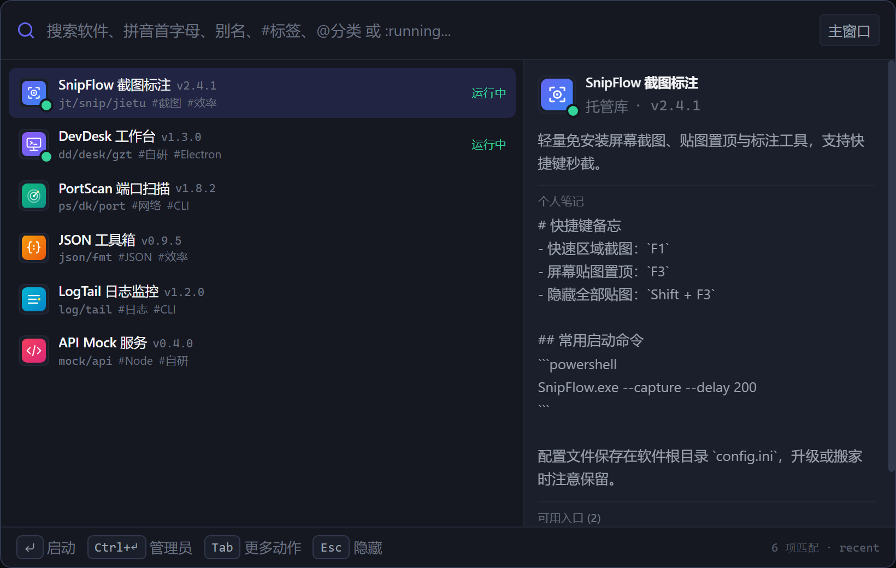
| 搜索写法 | 说明 | 实际示例 |
|---|---|---|
| 名称 / 英文模糊 | 支持完整名称、前缀、子串及隔字模糊序列匹配 | 输入 snip 命中 SnipFlow 截图标注 |
| 中文全拼 / 首字母 | 自动为中文名称建好拼音索引，免切英文直接搜 | 输入 jietu 或 jt 命中「截图」 |
| 自定义别名 | 在详情中设置的短别名享有最高匹配优先级 | 给工具设别名 dd，敲 dd 秒出 |
#标签 / @分类 | 按标签或分类过滤，支持与关键词空格组合 | #CLI 端口 或 @自研 |
:running / :pinned | 仅显示正在运行中或收藏置顶的软件 | 输 :running 快速关闭/重启后台工具 |
选中任意软件后按一下 Tab 键，右侧面板立即切换为二级动作菜单，可选择子入口、管理员运行、带临时参数运行、打开目录/终端、复制路径、重启或结束进程、跳回主窗口编辑等：
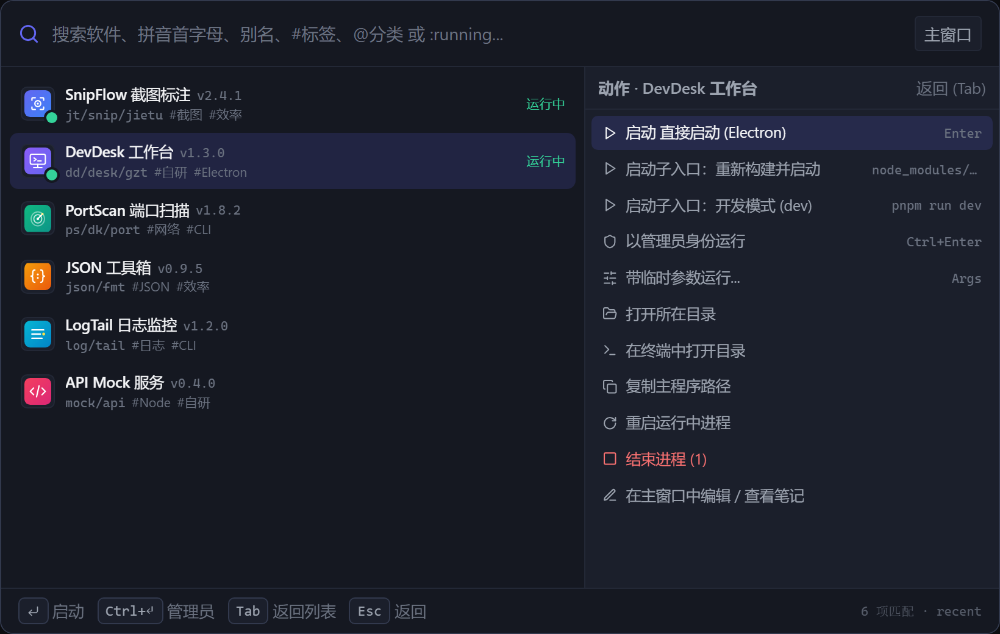
| 快捷键 | 对应功能 |
|---|---|
| Alt + Space | 在任意应用之上呼出 / 隐藏极速启动条 |
| ↑ / ↓ | 上下移动选中软件或动作项 |
| Enter | 启动选中软件的主入口（或执行选中动作）并自动隐藏 |
| Ctrl + Enter | 以 Windows 管理员身份（UAC 提权）启动选中软件 |
| Tab | 在「右侧信息预览」与「二级动作菜单」之间切换 |
| Esc | 退回上级：临时参数 → 搜索列表 → 清空关键词 → 隐藏启动条 |
3.3 托盘快捷浮窗与托盘菜单：鼠标党最顺手的小弹窗
左键单击右下角系统托盘的 OneApp 图标，即可贴着任务栏弹出轻量托盘快捷浮窗：
- 三大标签：
快捷（正在运行 → 收藏置顶 → 最近使用）、运行中（点右侧绿色方框 ■ 一键结束进程）、全部（支持按分类胶囊筛选）。 - 图钉固定模式：点亮右上角图钉 📌，连续启动多个软件时浮窗不会自动收起。
- 支持直接拖入：直接把桌面文件拖进这个小浮窗即可解析入库。
- 更多操作面板：右键行或点右侧
...展开底部面板（右图），快速切换子入口、管理员运行或管理进程。
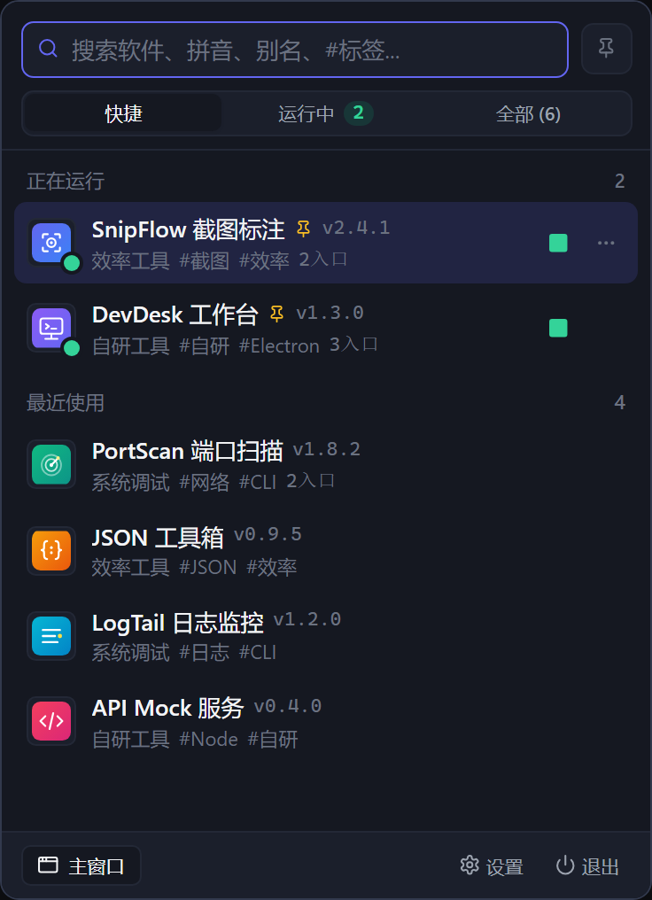
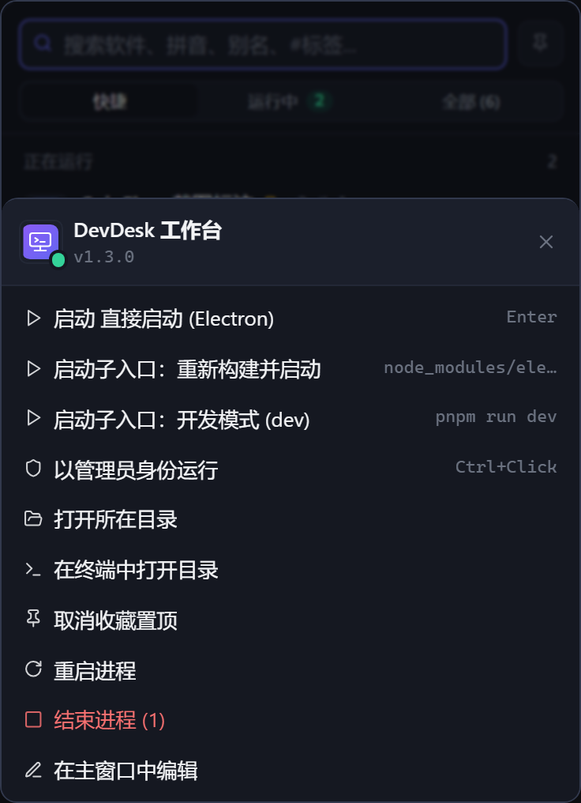
3.4 源码项目与自定义命令：开发中的项目也能一键构建启动
点击主窗口右上角的 「添加项目/命令」（或直接把源码目录拖入窗口），即可用「仅链接原路径」模式纳管本地研发项目：
- Electron / Node 自动识别：自动探测
pnpm/yarn/bun/npm，自动提取图标，并为 Electron 项目一键生成「直接启动 (Electron)」「重新构建并启动」「开发模式 (dev)」3 个入口。 - 自定义命令 & 前置构建：Python / Go / Rust 等项目可填任意启动命令，并支持配置
产物缺失时自动构建（指定检测文件路径如out/main/index.js）或每次启动前构建。 - 无黑窗日志捕获：勾选「隐藏控制台黑窗并捕获运行日志」，运行期间所有控制台输出都直接显示在 OneApp 右侧抽屉里。
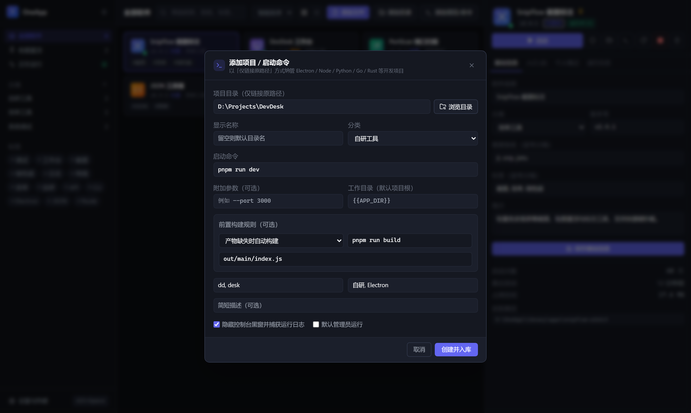
3.5 详情抽屉深度配置：图标、多入口、笔记与实时日志
在右侧详情抽屉中，你可以对每个软件进行全方位的细致设置（鼠标悬停在左上角图标上还可自定义图标或重新提取图标）：
① 多入口与运行参数模板
支持 exe、command、bat、cmd、ps1、lnk 共 6 种入口类型，可添加无限多个入口并指定主入口。支持环境变量注入以及 3 个便携路径占位符：{{APP_DIR}}（软件目录）、{{ENTRY_DIR}}（入口目录）、{{ONEAPP_DIR}}（OneApp 根目录）。
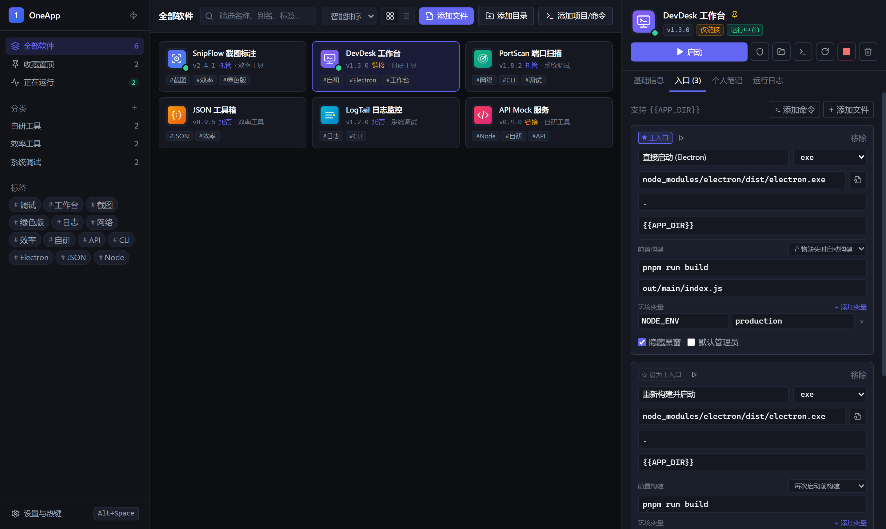
② 个人使用笔记（Markdown）
随时记录软件常用参数、快捷键或配置路径，支持预览渲染，并会自动同步显示在极速启动条右侧面板。
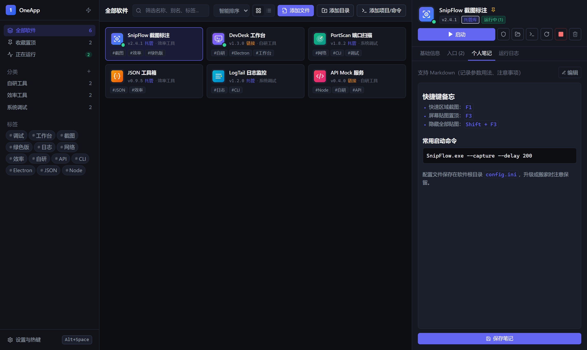
③ 实时构建与运行日志
当启用「隐藏黑窗」或触发「前置构建」时，OneApp 会实时流式捕获最近 500 行 stdout/stderr 输出，并提供状态徽章、一键复制和清空功能。
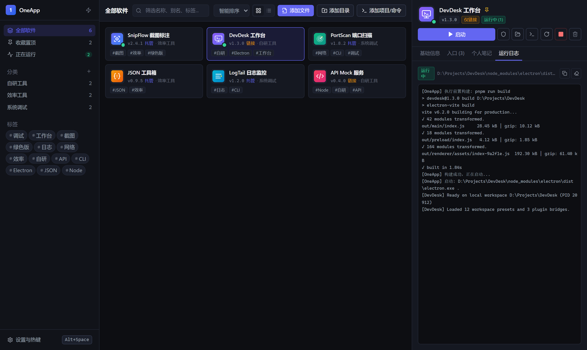
3.6 设置与全局热键：按你的习惯定制 OneApp
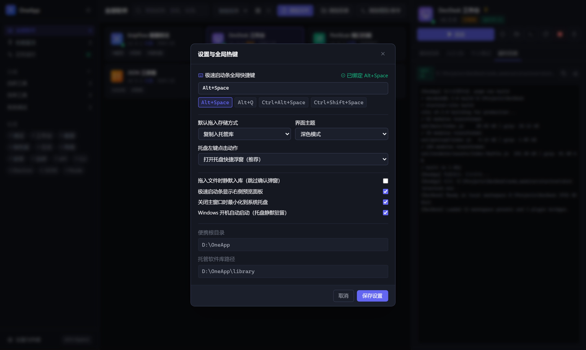
| 设置项 | 默认值 | 作用说明 |
|---|---|---|
| 极速启动条全局快捷键 | Alt+Space | 自定义热键或点预设按钮；实时检测与其他软件的热键冲突状态 |
| 默认拖入存储方式 | 复制入托管库 | 设置拖入窗口时默认选中的方式（复制 / 移动 / 仅链接） |
| 界面主题 | 跟随系统 | 可选跟随系统、深色模式、浅色模式，三窗口实时同步切换 |
| 托盘左键点击动作 | 打开托盘快捷浮窗 | 可改为直接打开管理主窗口或呼出极速启动条 |
| 拖入文件时静默入库 | 关闭 | 开启后拖入单个软件/压缩包跳过确认框直接按默认规则入库（源码项目仍会弹窗确认） |
| 极速启动条显示右侧预览 | 开启 | 关闭后启动条仅保留简洁搜索列表，按 Tab 仍可展开动作面板 |
| 关闭主窗口最小化到托盘 | 开启 | 关闭主窗口后留在托盘后台待命，随时按热键秒呼 |
| Windows 开机自动启动 | 关闭 | 开启后以 --silent 参数开机静默驻留系统托盘，不弹窗打扰 |
4. 绿色便携目录结构与换电脑搬家指南
OneApp 自身免安装且默认便携。所有数据与默认托管软件都在同级目录下：
OneApp/
├── OneApp.exe # 主程序（单文件已内嵌全部前端界面）
├── data/ # 本地运行时数据
│ ├── oneapp.db # SQLite 主数据库（纯 Go 驱动 + WAL 模式）
│ ├── settings.json # 个人设置（热键、主题、默认存储方式等）
│ ├── icons/ # 提取缓存的高清 PNG 图标
│ ├── cache/ # 临时缓存目录
│ ├── backups/ # 预留备份目录
│ └── logs/ # 运行日志目录
└── library/ # 默认托管软件库
└── apps/
├── snipflow-a1b2c3/ # 托管软件独立目录（数据库仅存相对路径）
└── portscan-3f7e2a/
OneApp/ 文件夹复制到 U 盘、移动硬盘或新电脑的任意盘符下双击 OneApp.exe 即可。所有托管软件、图标、多入口、参数与笔记零损坏原样复活！
5. 常见问题 FAQ（小白排障）
1. 按下 Alt + Space 没反应，或提示快捷键冲突怎么办？
Alt+Space。打开主窗口左下角「设置与热键」，点击其他预设（如 Alt+Q、Ctrl+Alt+Space、Ctrl+Shift+Space）或自行输入新快捷键并保存即可。
2. 为什么我把文件拖到 OneApp 窗口里没反应（显示禁止图标）？
3. 导入 Electron 项目后启动提示找不到 electron.exe 怎么办？
pnpm install（或 npm install），依赖就绪后即可在 OneApp 中直接秒开。
4. 脚本或命令行项目启动后看不到输出、或者闪退怎么排查？
5. 点右上角 × 关不掉程序怎么办？
6. 开发者：从源码编译与运行
环境要求：Windows 10/11（WebView2 Runtime）、Go 1.26+（纯 Go 零 CGO，无需 GCC/MinGW）、Node.js 20+、pnpm、Wails v3 CLI（v3.1.0）。
git clone https://github.com/backbay2-yzg/OneApp.git cd OneApp go install github.com/wailsapp/wails/v3/cmd/wails3@latest wails3 generate bindings -ts -i cd frontend && pnpm install && pnpm build && cd .. go build -ldflags "-H windowsgui -s -w" -o build/bin/OneApp.exe .
go test ./...
7. 设计文档与后续规划
想了解产品完整设计与后续演进路线，欢迎阅读仓库内置设计文档：
后续规划能力包括：GitHub Release 链接直拉与 Windows 资产智能筛选（含私有库 Token 与代理）、配置零丢失升级（Install Manifest Diff + 历史备份一键回滚）、批量文件夹扫描导入向导、单软件独立全局热键以及轻量换机清单导出与恢复。